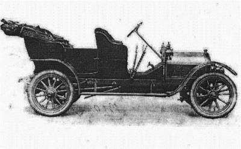

|
Neugraben-Jubiläumsbuch auch in 2017 weiter erhältlich! In einer Gerichtsakte aus dem Jahr 1553 wird erstmals der Name Gödeke Tiedemann erwähnt. Dieser erklärt darin, dass er seit 37 Jahren in Neugraben lebt.Daraus ergibt sich das Jahr 1516 als Beleg für eine dauerhafte Besiedelung im heutigen Neugraben. Das Buch zum Jubiläum ist am Sonnabend, dem 8. Oktober 2016 erschienen und in der Bücherhalle Neugraben erhältlich. Sichern Sie sich Ihr Exemplar! Das Buch eignet sich auch sehr gut als Geschenk. Am Freitag, 21. Oktober 2016, 19:00 Uhr fand eine Lesung von Auszügen aus dem Buch mit Uwe Michelau, einem der Autoren, im Kulturhaus Süderelbe statt. Im Mai 2017 wird es einen weiteren Vorleseabend geben. +500 Jahre Geschichte mit Höhen und Tiefen und mit vielen Geschichten.Das Buch wird von Süderelbe-Archiv herausgegeben. Sie erhalten es ab September zum Preis von 14,90 € im Buchhandel und in der Bücherhalle Neugraben. Sie können es aber schon jetzt vorbestellen. Senden Sie dazu eine Mail an das Süderelbe-Archiv. Hier eine Leseprobe: Neugrabens erster Verkehrssünder -Statt Radarkontrollen galt das AugenmaßMit einem solchen Auto könnte der erste Neugrabener Verkehrssünder unterwegs gewesen sein: Stoewer Pk4 – Baujahr 1909: Höchstgeschwindigkeit 70 km/h Anfang des 20. Jahrhunderts hielt auch in Neugraben die neue Zeit Einzug. Es erschienen die ersten Autos auf der Straße. Aber einer der Autobesitzer muss flott unterwegs gewesen sein, zu flott.Amüsiert und schmunzelnd muss man zur Kenntnis nehmen, dass im April 1909 dieser erste Autobesitzer prompt wegen seiner Fahrweise ein Strafmandat bekam mit der Feststellung: „Sie haben am 22. April 1909 abends gegen 7.10 Uhr die Albersstraße hier mit Ihrem Kraftwagen – I S 1620 – in übermäßig schneller Fahrgeschwindigkeit befahren.“ Aber wie haben Polizeibeamte zu der da-maligen Zeit Geschwindigkeitsübertretungen überhaupt feststellen können? Radar gab es noch nicht. Das war ganz einfach. Es galt der Augenschein. „Die Übertretung wird bewiesen durch den Polizei Kommissar Ulrichs, den Polizei Sekretär Ahlers, den Kanzleigehilfen Deppe und durch die Dienstmagd Friede Kerl hier. Es wird deshalb gegen Sie auf Grund der §§ 16, 17 und 28 der Polizeiverordnung vom 1. September 1906 eine Geldstrafe von dreißig Mark, an deren Stelle, wenn sie nicht beizutreiben ist, eine Haft von drei Tagen tritt, hierdurch festgesetzt.“ Offenkundig aber hat diese Strafe nicht nachhaltig gewirkt. Denn … Eine kleine Auswahl der Themen –Geschichten aus fünf Jahrhunderten
|